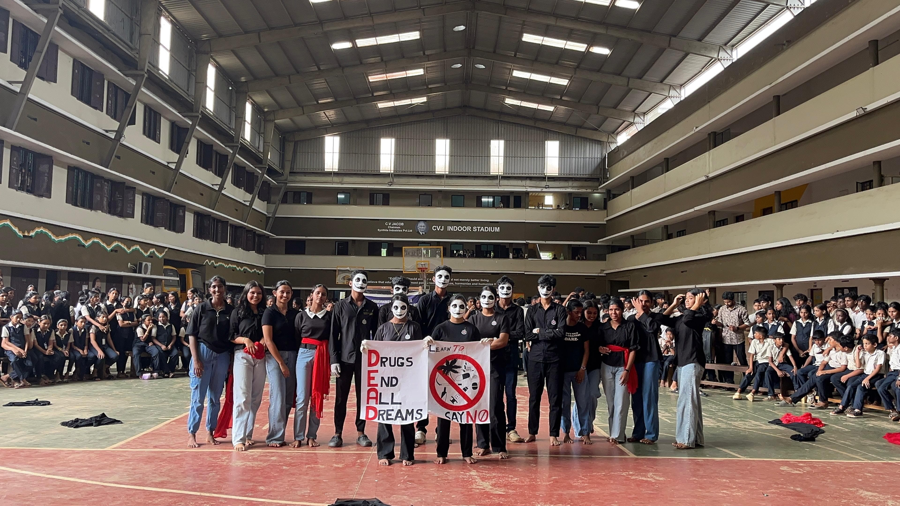
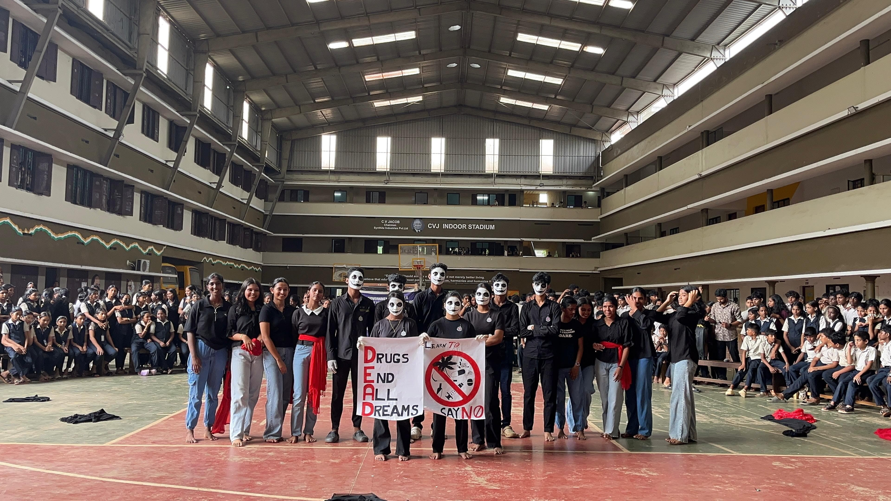

Souhrida Club
Promoting Emotional and Mental Wellbeing
The Souhrida Club is an innovative health and wellness initiative aimed at supporting the emotional and psychological development of students. At GHSS Kadayiruppu, it serves as a safe and nurturing platform where students can openly discuss personal issues, seek guidance, and foster positive relationships.
The club promotes awareness on topics such as adolescence, emotional intelligence, reproductive health, mental wellness, and gender sensitivity through interactive sessions, counseling, and workshops led by trained professionals and counselors.
With peer educators and school counselors guiding the way, students are encouraged to engage in self-reflection, communication improvement, stress management, and confidence-building exercises. Group discussions, theater performances, and role plays on mental health themes are regular activities.
The Souhrida Club stands out by creating an inclusive atmosphere that breaks taboos and addresses issues like bullying, academic pressure, substance abuse, and self-esteem challenges — ensuring every student feels seen, heard, and supported.
- Counseling Support & Peer Mentoring
- Emotional Intelligence and Stress Management
- Workshops on Adolescent Issues & Gender Sensitivity
- Awareness Drives on Mental Health
- Stage Plays & Visual Campaigns on Wellbeing
 
